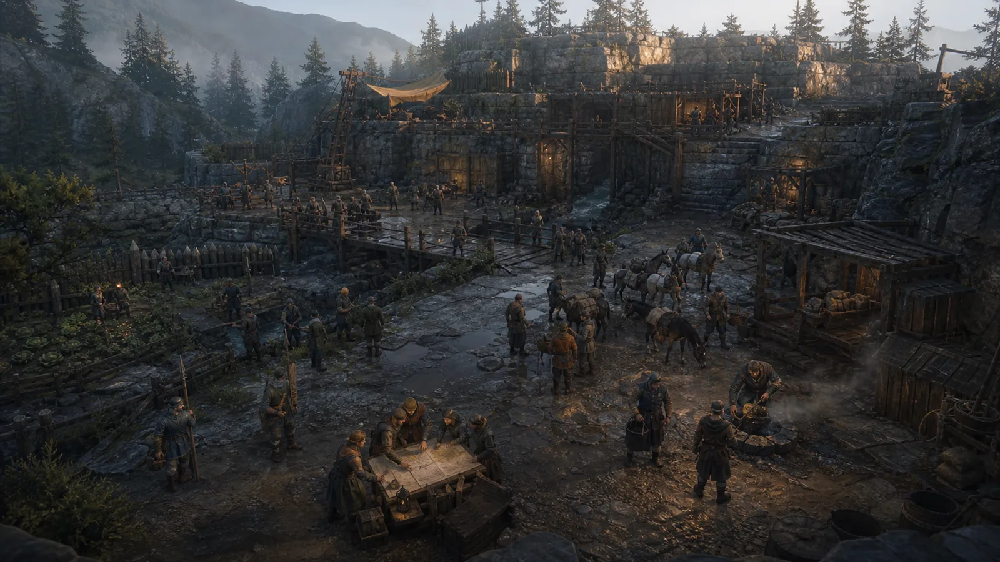
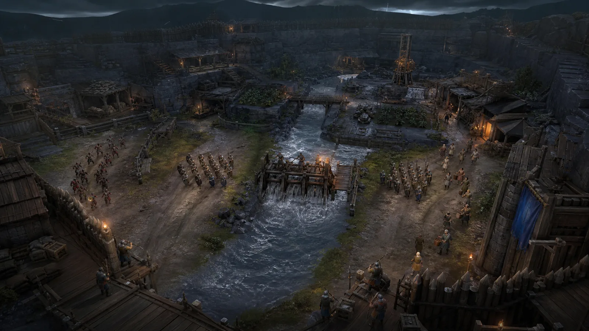
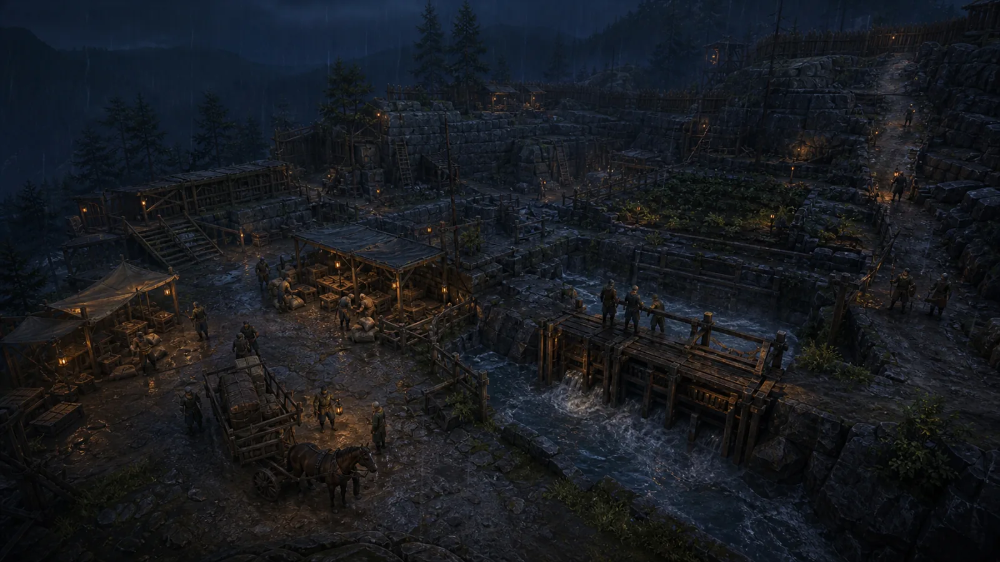

ACCEPTED
UNVERFÜGBAR
Nur der exakte, verifizierte main-Baum zählt als akzeptierter Stand.
OPEN RESEARCH · LOW-SPEC · EVIDENCE FIRST
Riftward untersucht eine agentische Produktionskette und ein eigenes Fantasy-RTS/RPG für alte Hardware. Das öffentliche Cockpit zeigt nur belegten Stand — und macht fehlende Belege sichtbar.
CONCEPT · NOT GAMEPLAY Die Bildsprache dieser Seite ist Forschungskonzept, kein Runtime-Capture und kein Spielversprechen.
01 / FÜNF GETRENNTE AUSSAGEN
Akzeptanz, Kandidaten, WIP und beobachtete Aktivität sind verschiedene Zustände. Ein READY-Task ist nicht automatisch effektiv startberechtigt; ein WIP ist kein Fortschritt auf main.
ACCEPTED
Nur der exakte, verifizierte main-Baum zählt als akzeptierter Stand.
CANDIDATES
WIP CONTINUITY
WIP kann Kontinuität dokumentieren, nie Akzeptanz ersetzen.
OBSERVED ACTIVITY
Ohne frisches, begrenztes Signal wird keine Aktivität behauptet.
CLAIM BOUNDARY
02 / ATMOSPHERE DOSSIER
Material, Arbeit und Schutz statt Hochglanzhelden. Jedes Motiv bleibt sichtbar als Konzept markiert — diese Bilder belegen weder Gameplay noch Hardwareleistung.



Die zugelassenen Webableitungen sind im öffentlichen Medienmanifest gebunden. Originale und lokale Quarantäne bleiben außerhalb des Pages-Artefakts.
03 / METHODENKARTE
Das Projekt ist eine praktische Fallstudie für Cong-Driven Development (CDD), keine Behauptung vollständiger CDD-Konformität.
AKZEPTIERTE GRAYBOX-SCHLEIFE
Die akzeptierte Schleife ist ein eng begrenzter, überprüfter Projektstand. Sie belegt weder fertiges Gameplay noch eine vertikale Slice-Qualität.
Abnahmebelege auf main ↗PRAKTISCHE CDD-FALLSTUDIE
Versionierte Absicht, überprüfbare Ausführung und prüfbare Belege sind getrennt. Das Cockpit stellt sie dar, es erzeugt oder akzeptiert sie nicht.
CDD-Mapping auf main ↗NICHT BELEGT
Keine validierte Zielhardware, keine erwiesene 24/7-Autonomie, kein fertiges Spiel. Fehlende oder alte Beobachtungen erscheinen als unbekannt oder nicht verfügbar.
Forschungsprotokoll auf main ↗04 / DIREKTE BELEGE
Der öffentliche Status bindet ausschließlich den akzeptierten main-Stand. Bitte prüfe die Primärartefakte, nicht eine Aktivitätsanzeige.